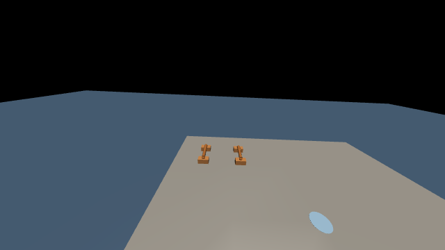
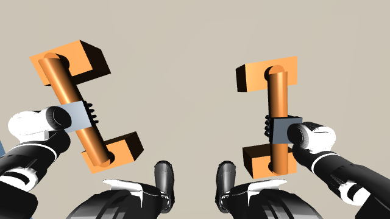
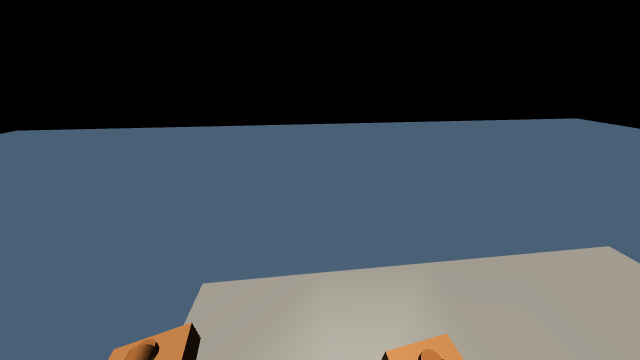
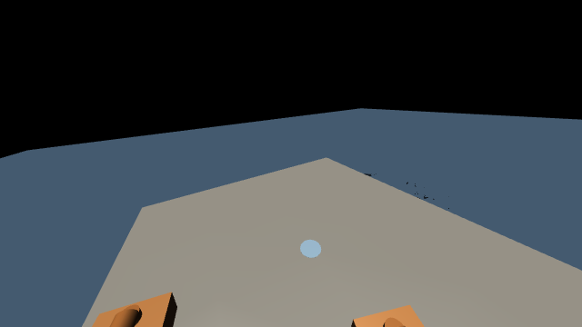
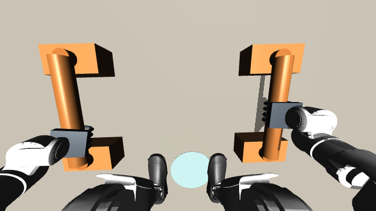
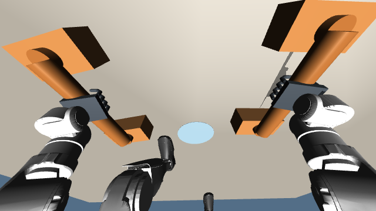
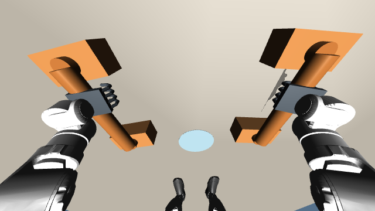
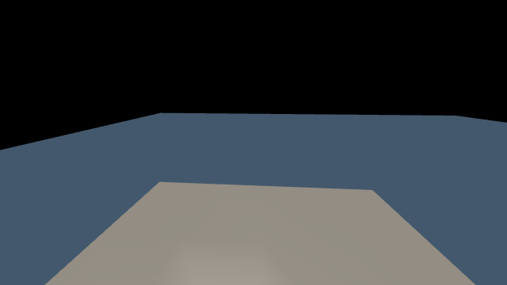
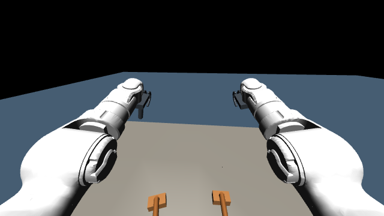

1. 系统与任务
GPT-6-Astra 参与机器人表演运行期间的反馈决策。机器人执行一段运动后，系统从当前 MuJoCo 状态生成第一视角 RGB 图像，并读取关节位置、机身速度、重力方向、夹爪位移及手足接触力。当前 Codex 会话中的 GPT 接收这些新观测，结合完整表演任务和此前执行结果，判断是否继续当前阶段程序提出的动作、执行多长时间以及何时再次观察。有效决策到达后，仿真继续推进，形成反复更新的观测—决策—执行闭环。
该闭环贯穿登台、拾架、搬运、放架、俯卧撑和跳跃等阶段。本轮连续运行保存了 55 组观测编号对应的 GPT 决策，包含对新图像与本体状态的判断，以及实际采用的执行窗口。任务顺序由阶段程序辅助，导航参考由 SONIC planner 生成，SONIC 跟踪策略执行腿部控制，IK、支撑控制与 PD 完成操作动作和电机驱动。
第一视角和本体状态取自每个检查点的当前物理状态。GPT 决策期间暂停仿真，收到有效动作后继续运动；下一次检查点再提供新的反馈。因此，本系统实现的是事件触发的在线暂停步进控制，尚未验证物理持续运动时的墙钟实时推理。
- ① 当前观测机器人第一视角
本体状态与手足接触 - ② GPT 在线决策执行或终止
执行窗口与可用参数 - ③ 运动控制SONIC / IK
接触支撑与 PD - ④ MuJoCo 推进电机驱动与物理积分
产生新的机器人状态
场景采用 Unitree G1，包含 29 个身体转动关节、2 个滑台夹爪以及可自由运动的两只支架。模型具有 52 维广义位置、49 维广义速度和 31 维执行器输入；身体关节使用力矩驱动，夹爪使用直线驱动力。
- 登台与搬运：机器人登上舞台，走到支架前，停稳后弯腰握架并起身，再原地转向舞台中心并搬运。
- 放置与展示：在中心停下，将支架放到面前，松手并起身，完成第一次秀肌肉后恢复自然站立。
- 支架俯卧撑：下蹲并前伸双臂握架，逐腿后伸并稳定支撑，曲臂下降、推起，逐腿收回，松手并起身。
- 跳跃与谢幕：双臂后摆并屈膝，前摆双臂并起跳，落地站稳后完成最终秀肌肉。
2. GPT 运行时闭环
完整任务要求保留在 Codex 会话上下文中。仿真进程保持机器人、控制器和物理状态常驻，在检查点通过文件发布观测，Codex 使用工具读取图像与状态并提交决策。每一轮按以下顺序执行：
- 运动执行与触发。已有控制器根据上一次有效决策推进运动。在阶段转换检查点或指定窗口到期时，程序进入观测流程；底层动力学失败会单独触发终止。
- 获取当前第一视角和本体状态。程序复制当前关节位置与速度到渲染场景，生成相机图像，同时读取该检查点的本体与接触摘要。图像、仿真时间和状态使用同一观测编号保存。
- 将新观测交给 GPT。仿真发布 observation_NNN.json 和 ego_NNN.png，并等待动作。当前 Codex 会话读取 JSON 与对应图像；GPT 综合任务要求、视觉、接触状态、身体稳定性及上一轮决策作出判断。
- 生成下一段执行决策。GPT 输出当前观测编号、是否执行、执行窗口、速度比例、控制后端和判断理由。窗口决定下一次反馈的最晚检查时刻，阶段转换可提前触发反馈。
- 校验与执行。程序检查编号、参数范围和阶段允许的后端。有效动作允许继续物理推进；明确拒绝执行、无效动作或等待超时会终止本次运行。未收到决策时不推进物理时间。
- 反馈更新。运动产生的新状态用于下一轮读图与判断。观测、决策、控制输入和实际轨迹均分别保存，可按观测编号追溯。
本轮由 Codex 会话通过工具完成逐次文件交互，未调用独立模型 API 服务。校准模式会由程序生成固定参数并标记为 calibration；本页展示的 codex_sonic_003 使用 codex 来源记录。
2.1 GPT 接收的观测
虚拟相机固定于 torso_link，局部位置为前向 0.095 m、上方 0.40 m，朝前下倾 25°，垂直视场为 90°。原始 RGB 图像分辨率为 640 × 360。相机未经真实传感器标定。
- 图像与观测编号、全局仿真时刻及阶段程序提出的下一动作。
- 29 个身体关节的位置、机身坐标系下的重力方向和线速度。
- 双手、双脚的接触力摘要，以及两个夹爪的位移。
- 上一次决策及当前阶段允许使用的控制后端。
| 观测量 | 维度 | 用于运行时判断 |
|---|---|---|
| 第一视角 RGB | 360 × 640 × 3 | 支架与台面的相对位置、手与杆的关系，以及运动前后视野变化。 |
| 身体关节位置 | 29 个角度 | 辅助确认站立、下蹲、伸腿与定姿状态。 |
| 机身速度与重力方向 | 各 3 维 | 辅助判断身体运动、倾斜与稳定程度。 |
| 手足接触力摘要 | 4 个数值，依次为左手、右手、左脚、右脚 | 判断手部承重、单腿离地及重新落脚。 |
| 夹爪位移 | 2 个数值 | 辅助确认闭合与释放状态。 |
| 任务与阶段信息 | 文本及结构化字段 | 结合完整任务、建议阶段、上一决策与可用控制后端确定执行意图。 |
观测 JSON 不直接提供舞台或支架的世界坐标。底层 IK 使用仿真几何信息，开发会话也可接触运行日志中的世界坐标，因此本实验不构成特权信息隔离的纯视觉盲测。
2.2 GPT 输出与控制作用
| 字段 | 含义与约束 |
|---|---|
| observation_id | 必须对应当前观测编号，过期动作被拒绝。 |
| execute | 批准执行或显式终止；终止不能记作任务完成。 |
| horizon_s | 0.1–8 s 的仿真执行窗口；阶段转换可以提前触发下一观测。 |
| speed_scale | 0.8–1.2 的行走速度比例；波比跳接触动作固定为 1，保持内部时序。 |
| controller | 选择当前阶段可用的控制后端；本轮 6 次决策选择 SONIC，其余决策选择 legacy。 |
| reason | 保存依据当前图像与本体状态作出的执行判断。 |
动作先写入临时文件，再原子重命名，避免仿真读取不完整数据。缺失决策、超时、无效参数或动力学失败均显式记录并终止。本轮 GPT 共提交 55 次决策，在落脚与腾空检查点将执行窗口缩短至 0.7 s。
执行窗口控制两次 GPT 观测之间允许推进的仿真时长，窗口缩短会提高观察密度。execute 为真时继续建议阶段，为假时终止整次运行；该接口未提供任意阶段重排或替换动作路径。窗口到期发生在下一个控制检查点，时间精度受底层控制步长限制。
本轮实际使用情况：55 次决策均批准执行，速度比例均为 1.0，其中 6 次选择 SONIC，49 次选择 legacy。GPT 根据新观测选择控制后端和观察窗口；主动终止及速度比例调整未在本轮触发。阶段顺序、导航目标与接触动作参考由任务程序提供。
2.3 实例：视觉与本体反馈驱动的在线决策
以下九个实例取自本轮真实 Codex 决策。图像、接触力与速度对应同一检查点；判断文字直接读取动作文件，窗口表示允许推进的最长仿真时间。阶段变化可以提前触发下一次观察。
接近支架：缩短行走观察窗口
观测 2 · 5.546 s · approach

左、右手接触力：0.0 / 0.0 N；左、右足接触力：228.8 / 217.0 N。机身坐标系线速度：(0.3087, -0.5107, -0.0758) m/s。
GPT 记录的判断：已登上台面，支架仍在前方且双脚承重正常；当前有换步横向速度，保持SONIC导航并用较短窗口观察接近过程。
下发动作：继续执行，窗口 4 s，速度比例 1.0，后端 sonic。
拾架：确认双手接触后起身
观测 10 · 37.260 s · pickup

左、右手接触力：24.1 / 15.2 N；左、右足接触力：176.0 / 170.1 N。机身坐标系线速度：(0.0000, 0.0001, 0.0001) m/s。
GPT 记录的判断：两只夹爪已闭合并产生约24N和15N接触力，图像中横杆位于夹持区域；身体静止，批准保持夹持并缓慢起身提架。
下发动作：继续执行，窗口 8 s，速度比例 1.0，后端 legacy。
持架转向：启用 SONIC
观测 12 · 45.262 s · turn_center

左、右手接触力：17.9 / 19.0 N；左、右足接触力：182.6 / 173.9 N。机身坐标系线速度：(-0.0012, 0.0002, 0.0010) m/s。
GPT 记录的判断：已站稳并持续夹持两只支架；启用SONIC原地转向舞台中心，上肢继续保持提架姿态，短窗口检查负重转身。
下发动作：继续执行，窗口 3 s，速度比例 1.0，后端 sonic。
负重行走：朝舞台中心移动
观测 13 · 47.224 s · carry_center

左、右手接触力：21.5 / 18.2 N；左、右足接触力：0.0 / 279.4 N。机身坐标系线速度：(0.1004, 0.2530, -0.1145) m/s。
GPT 记录的判断：中心标记已转到前方，画面下方仍能看到两只被握持的支架，双侧夹持力保持；继续SONIC负重走向中心并逐步减速。
下发动作：继续执行，窗口 7 s，速度比例 1.0，后端 sonic。
放架：保持夹持并等待落地
观测 19 · 77.500 s · ground_settle

左、右手接触力：18.2 / 16.4 N；左、右足接触力：176.0 / 176.4 N。机身坐标系线速度：(0.0016, -0.0004, -0.0022) m/s。
GPT 记录的判断：两只支架已到中心标记前方，机器人蹲姿和夹持稳定；保持当前水平落点，执行缓慢下降与调平，确认底座落稳后才能松手。
下发动作：继续执行，窗口 4 s，速度比例 1.0，后端 legacy。
逐腿后伸：检查右脚落地
观测 36 · 127.176 s · right_land

左、右手接触力：121.5 / 126.2 N；左、右足接触力：0.0 / 0.0 N。机身坐标系线速度：(0.2289, 0.0207, -0.1451) m/s。
GPT 记录的判断：右膝已接近伸直，两手正在承担主要重量，脚部接触尚未建立；先完成右脚落地，不提前伸左腿。
下发动作：继续执行，窗口 0.7 s，速度比例 1.0，后端 legacy。
俯卧撑：根据接触状态允许下降
观测 39 · 129.632 s · pushup_lower

左、右手接触力：114.0 / 80.9 N；左、右足接触力：57.8 / 84.1 N。机身坐标系线速度：(0.0078, -0.0073, 0.0010) m/s。
GPT 记录的判断：双脚和双手均已承重，身体速度接近零；开始俯卧撑下压，缓慢屈臂并维持手脚支撑。
下发动作：继续执行，窗口 2 s，速度比例 1.0，后端 legacy。
腾空：缩短窗口等待落地
观测 51 · 154.952 s · jump

左、右手接触力：0.0 / 0.0 N；左、右足接触力：0.0 / 0.0 N。机身坐标系线速度：(-0.6622, -0.0038, 0.4530) m/s。
GPT 记录的判断：双脚接触力均为零，身体具有向上速度，已进入腾空阶段；短时继续跳跃控制，准备屈膝缓冲着地并复查支撑。
下发动作：继续执行，窗口 0.7 s，速度比例 1.0，后端 legacy。
落地：检查缓冲与恢复站立
观测 52 · 155.652 s · jump

左、右手接触力：0.0 / 0.0 N；左、右足接触力：173.8 / 168.5 N。机身坐标系线速度：(0.0312, -0.0014, 0.0087) m/s。
GPT 记录的判断：双脚已经重新承重，膝盖屈曲缓冲，身体速度明显降低且躯干直立；继续完成落地恢复，放下双臂并站稳。
下发动作：继续执行，窗口 3 s，速度比例 1.0，后端 legacy。
观测 12 和 13 将持架转向与负重行走交给 SONIC，同时保留上肢夹持控制。观测 36 的双足接触摘要为零，GPT 允许右脚落地阶段继续执行 0.7 s；该记录保留了手部承担主要支撑的瞬间。观测 51 的双足接触力为零且身体向上运动，GPT 选择 0.7 s 检查窗口；观测 52 已恢复双足接触，随后批准 3 s 完成缓冲与站立。接触力摘要与 GPT 的判断作为运行记录保存，严格质量结论由独立审计提供。
全部 55 次决策见原始决策日志，各次观测与动作均可按编号追溯。
3. 运动执行
GPT 的输出作用于运动段的执行许可和参数。任务顺序由已有阶段程序辅助，GPT 尚未独立生成全部阶段或高频电机命令。
- 行走与转向：SONIC planner 根据移动方向、速度和朝向生成运动参考，encoder 与 decoder 输出腿部目标，用于登台、接近支架、提架转向及走向中心。中心精确落脚继续使用原有控制器。
- 拾取与放置：IK 根据手腕、握杆、足底及身体姿态约束生成运动参考，夹爪通过真实接触夹持支架。放置时保持夹持并等待底座稳定，再松手与撤手。
- 支撑转换与俯卧撑：复用已有全身参考、IK 与接触力控制。逐腿后伸和收回分别具有落脚稳定阶段，手足接触力和机身速度用于检查支撑条件。
- 跳跃与定姿：已有摆臂、屈膝、伸腿和落地控制器产生关节目标；落地后的双足接触与身体速度满足稳定条件后进入最终定姿。
- 电机执行：关节位置与速度误差经 PD、必要的支撑补偿及力矩限幅转换为执行器输入。夹爪保留独立位置控制与驱动力限幅。
控制入口为 online_hybrid.py，搬运和波比跳分别调用 refine_stage_transport.py 与 continue_stage_performance.py。参考轨迹用于运动目标生成，实际机器人状态始终由动力学积分推进。
4. 动力学与时钟
物理积分步长为 0.0001 s。搬运控制以 0.002 s 为一步，波比跳控制以 0.004 s 为一步；GPT 的决策频率由阶段转换及执行窗口决定。模型等待期间暂停物理积分，系统属于在线暂停步进闭环，尚未验证墙钟实时控制。
搬运从全新场景初态执行。搬运和波比跳通过完整 mjSTATE_INTEGRATION 状态衔接，逐元素验证关节位置、速度、执行器及求解器状态一致，仅重置局部时间原点。本轮动力学状态衔接最大误差为 0，场景模型完全一致。
决策日志中的等待时间包含模型推理、工具调用与开发等待，不能作为纯模型推理延迟。仿真视频按物理时间播放，省略决策期间物理未推进的墙钟等待。
5. 实验结果
实验 codex_sonic_003 从初态完成四阶段连续执行，共 163.948 s、55 次 Codex 在线决策。运输段全部既定检查通过，在线记录和完整积分状态衔接审计通过。跳跃具有至少 0.120 s 双脚腾空，双脚共同离台间隙最大约 2.76 cm，最终定姿与稳定性检查通过。
5.1 行走稳定性
基准为 v2 的 codex_full_001。使用保存的 50 Hz 物理状态重新计算 torso_link 横滚 RMS，统计包含各段的加减速与停步；第一视角相机刚性固定于躯干，未添加视频防抖。两段 SONIC 导航的横滚 RMS 分别下降 53.4% 与 52.6%。
| 阶段 | v2 横滚 RMS | v3 横滚 RMS | v2 / v3 时长 |
|---|---|---|---|
| 登台接近支架 | 6.34° | 2.96° | 14.74 / 17.96 s |
| 提架转身与走向中心 | 5.87° | 2.79° | 11.58 / 8.30 s |
| 中心精确落脚（原控制器） | 6.17° | 6.85° | 1.62 / 10.38 s |
中心精确落脚仍存在可见摇摆，其调整时长和横滚均高于基准。上表中的改善幅度仅适用于两段 SONIC 导航。完整指标见躯干稳定性审计。
5.2 物理与动作质量
完整阶段执行和严格物理质量分别报告。运输检查全部通过；波比跳严格物理检查及部分运动质量检查未通过，阈值保持原值。
| 指标 | 实测 | 现有判据 |
|---|---|---|
| 支架最大位移 | 10.74 cm | ≤ 3 cm |
| 累计自接触 | 32 ms | ≤ 10 ms |
| 最大关节速度 | 限制的 1.065 倍 | ≤ 1 倍 |
| 逐腿横向偏移 | 左腿后伸 5.76 cm；右腿收回 8.15 cm | ≤ 5 cm |
| 俯卧撑顶部伸臂 | 未达到双肘阈值 | 双肘均 > 165° |
| 双手夹持几何有效比例 | 55.3% | ≥ 90% |
在线审计 · 运行结果 · 动作质量审计。四次逐腿运动均记录到位移、离地与落地，最终跳跃和定姿通过运动检查。
6. SONIC 导航与操作协同
本系统使用 NVIDIA 发布的 SONIC kinematic planner、encoder 与 decoder，将目标导航、学习型运动跟踪和任务 IK 分层组合。官方模型通过 ONNX Runtime 执行，保持配套的关节映射、默认角度、动作缩放与 PD 增益。
6.1 导航与运动参考
任务程序提供导航目标；根据当前位置计算世界坐标系中的移动方向、目标速度和朝向，并通过速度反馈补偿实际速度偏差。planner 每 0.4 s 更新一次，平移使用 slowWalk 模式，停止与原地转向使用 idle 模式。输入包含四帧 36 维 G1 位姿，每帧由基座位置、四元数与 29 个身体关节角组成。
planner 输出 30 Hz 参考，关节角采用线性插值，基座四元数采用 SLERP，参考更新处设置 0.16 s 过渡。首次上下文取当前实测位姿，后续上下文取上一参考轨迹的采样，以保持参考连续性。
6.2 学习型跟踪与任务上肢控制
encoder 将 1762 维参考输入编码为 64 维 motion token；decoder 将 token 与十帧本体感知历史组合为 994 维输入，输出 29 维身体关节动作。网络每 20 ms 推理一次，对应仿真时间的 50 Hz。本轮记录 1313 次策略推理与 69 次 planner 更新，详见执行记录。
实际驱动采用 SONIC 输出中的 12 个腿部关节目标。腰部、双臂和两只夹爪继续使用任务 IK、PD 与负载补偿；任务上肢参考也覆盖 planner 对应分量，支持握架期间的姿态保持。该组合未经额外训练，本实验验证范围限于当前场景与轨迹。
6.3 控制切换与支架放置
SONIC 用于 stage_entry、approach、turn_center 与 carry_center。turn_front 的中心精确落脚，以及拾放、逐腿伸收、俯卧撑和跳跃采用原有控制器。操作阶段结束后，根据当前实测状态重新初始化参考缓存、策略历史和速度反馈积分项，机器人与支架的物理状态保持连续。
放置控制保持支架到达台面附近时的水平落点，每 0.1 s 的高度修正限制为每轴 0.5 mm，倾角修正限制为每轴 0.003 rad。四个底座接触力均超过 0.706 N、支架速度低于 0.03 m/s 且身体速度低于 0.05 m/s，持续 0.4 s 后才打开夹爪。夹持依赖 MuJoCo 真实接触，无焊接约束或外力搬运；关节力矩限制保持不变。
模型与接口来源：官方 GR00T-WholeBodyControl、GEAR-SONIC 模型、planner ONNX 接口。本实验的 50 Hz 为仿真时间控制频率，完整系统尚未验证墙钟实时运行。
7. 记录与可视化
每次在线决策保存第一视角图像、观测 JSON、动作及理由；全过程保存关节状态、速度、控制输入、接触指标和阶段事件。在线审计检查编号、来源、观测文件及状态连续性，运动审计进一步检查逐腿运动、曲臂幅度、跳跃腾空和最终稳定性。
首页左侧展示第三人称视角，可切换运镜衔接和固定全景；右侧展示连续第一人称视角。两个视频来自同一轮实际轨迹，以 15 fps、848 × 480 分辨率渲染，使用相同时间轴同步播放、暂停、跳转及倍速。连续第一视角视频用于展示，GPT 实际读取的是逐次保存的 640 × 360 原始观测。渲染调整相机与天空外观，未替换物理状态或插入片段交叉淡化。
视频复用同配置校准运行的渲染缓存；复用前对场景、轨迹数组与积分状态完成 18 项逐元素等同性检查，均与本轮在线运行完全一致。55 组原始观测和决策取自本轮 Codex 会话，渲染帧未用于模型决策。渲染等同性审计与渲染来源保留缓存来源和验证记录。